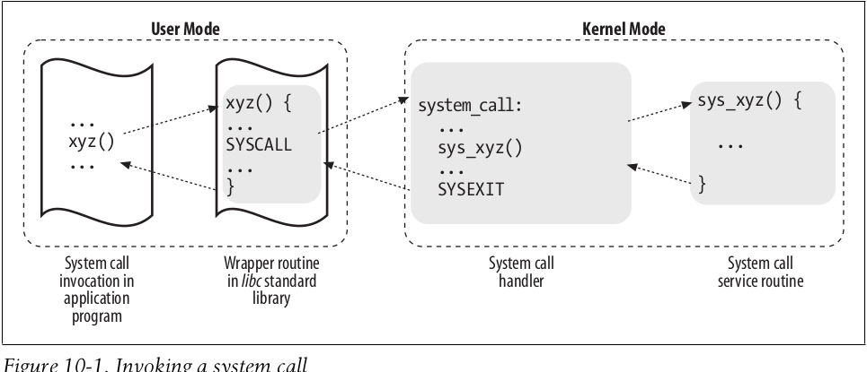
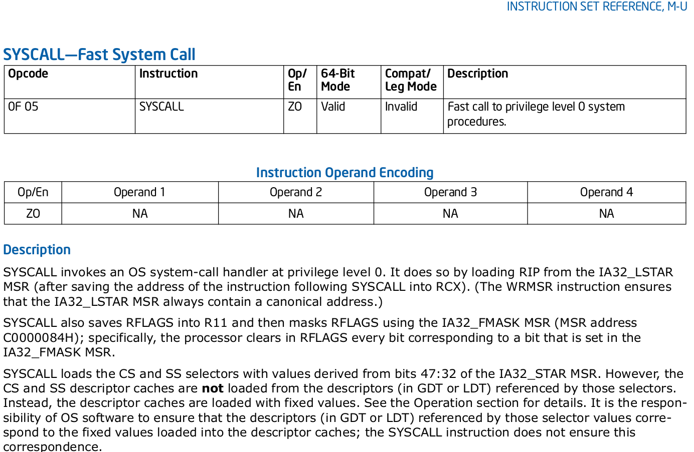
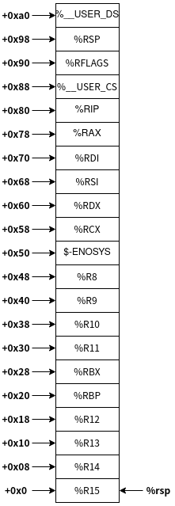

linux内核学习-七
前言
前面的博客简单分析了Linux内核处理中断和异常的方法。
而Linux内核处理系统调用的机制，与处理中断和异常的机制十分相似，这里来介绍一下。
系统调用处理程序及服务例程
系统调用处理程序和其他的异常处理程序机制类似，其执行下述操作
- 在内核态栈保存大部分寄存器的内容
- 调用名为系统调用服务例程(System Call Service Routine)的相应C函数，从而进行处理
- 用保存在内核栈中的值加载寄存器，CPU从内核态切换回到用户态
其具体关系如下图所示

正如前面分析的，Linux内核处理系统调用的机制和处理中断和异常的机制十分相似——其将系统调用号和系统调用服务例程，以数组的形式进行管理。从而根据相关的系统调用号，可以方便的找到对应的handler
该数组(sys_call_table)定义于arch/x86/entry/syscall_64.c，其每个元素的定义是通过位于scripts/syscalltbl.sh的syscalltbl.sh脚本，读取位于arch/x86/entry/syscalls/syscall_64.tbl的syscall_64.tbl设置文件生成的
最终生成的数组定义样例如下所示1
2
3
4
5
6
7
8
9
10
11
12
13
14
15
16
17// /arch/x86/entry/syscall_64.c
asmlinkage const sys_call_ptr_t sys_call_table[] = {
};
// arch/x86/include/generated/asm/syscalls_64.h
__SYSCALL(0, sys_read)
__SYSCALL(1, sys_write)
__SYSCALL(2, sys_open)
...
Linux内核在include/linux/syscalls.h中给出了系统调用及其信息，而具体的实现则是通过SYSCALL_DEFINEx宏和位于arch/x86/include/asm/syscall_wrapper.h的__SYSCALL_DEFINEx宏包装的以__x64_为前缀的符号。其包装调用如下所示1
2
3__x64_sys_$name
__se_sys_$name
__do_sys$name
进入和退出系统调用
进入系统调用
根据intel手册的1871页，其详细描述了64位的syscall指令，如下图所示

在syscall指令中，硬件会执行一系列相关的操作，从而跳转到系统调用处理进程的入口，会涉及到模块集寄存器，其在arch/x86/kernel/cpu/common.c的void syscall_init(void)函数中进行初始化。syscall指令将MSR_STAR的47:32值作为CS和SS段选择寄存器的值，将MSR_LSTAR的值作为rip寄存器的值。其将返回地址保存在rcx寄存器中，rflags状态保存在r11寄存器中，然后执行位于arch/x86/entry/entry_64.S的entry_SYSCALL_64函数。其化简后的逻辑如下所示
1 | UNWIND_HINT_EMPTY |
其中，SWITCH_TO_KERNEL_CR3、PUSH_AND_CLEAR_REGS等符号位于arch/x86/entry/calling.h中
其基本思路就是构造struct pt_regs结构体，并作为相关参数传递给do_syscall_64函数即可。最终struct pt_regs结构体内容如下所示

执行系统调用服务例程
Linux内核通过位于arch/x86/entry/common.c的__visible noinstr void do_syscall_64(struct pt_regs *regs, int nr)函数，最终调用相关的系统调用服务例程，从而完成系统调用。其化简后的逻辑如下所示1
2
3
4
5
6
7
8
9
10
11
12__visible noinstr void do_syscall_64(struct pt_regs *regs, int nr)
{
add_random_kstack_offset();
nr = syscall_enter_from_user_mode(regs, nr);
if (likely(nr < NR_syscalls)) {
nr = array_index_nospec(nr, NR_syscalls);
regs->ax = sys_call_table[nr](regs);
}
syscall_exit_to_user_mode(regs);
}
其基本思路就是根据系统调用号，从sys_call_table中找到handler地址，并执行即可
退出系统调用
即返回arch/x86/entry/entry_64.S的entry_SYSCALL_64符号剩余部分即可。其化简后的逻辑如下所示1
2
3
4
5
6
7
8
9
10
11
12
13
14
15
16
17
18
19
20
21
22
23
24
25
26
27
28
29
30
31
32
33
34
35
36
37
38
39
40
41
42
43
44
45
46
47
48
49
50
51
52
53
54
55
56
57
58
59
60
61
62
63
64
65
66
67
68
69
70
71
72
73
74
75
76
77
78
79
80
81
82
83
84
85
86
87
88 movq RCX(%rsp), %rcx
movq RIP(%rsp), %r11
cmpq %rcx, %r11 /* SYSRET requires RCX == RIP */
jne swapgs_restore_regs_and_return_to_usermode
/*
* On Intel CPUs, SYSRET with non-canonical RCX/RIP will #GP
* in kernel space. This essentially lets the user take over
* the kernel, since userspace controls RSP.
*
* If width of "canonical tail" ever becomes variable, this will need
* to be updated to remain correct on both old and new CPUs.
*
* Change top bits to match most significant bit (47th or 56th bit
* depending on paging mode) in the address.
*/
shl $(64 - (__VIRTUAL_MASK_SHIFT+1)), %rcx
sar $(64 - (__VIRTUAL_MASK_SHIFT+1)), %rcx
/* If this changed %rcx, it was not canonical */
cmpq %rcx, %r11
jne swapgs_restore_regs_and_return_to_usermode
cmpq $__USER_CS, CS(%rsp) /* CS must match SYSRET */
jne swapgs_restore_regs_and_return_to_usermode
movq R11(%rsp), %r11
cmpq %r11, EFLAGS(%rsp) /* R11 == RFLAGS */
jne swapgs_restore_regs_and_return_to_usermode
/*
* SYSCALL clears RF when it saves RFLAGS in R11 and SYSRET cannot
* restore RF properly. If the slowpath sets it for whatever reason, we
* need to restore it correctly.
*
* SYSRET can restore TF, but unlike IRET, restoring TF results in a
* trap from userspace immediately after SYSRET. This would cause an
* infinite loop whenever #DB happens with register state that satisfies
* the opportunistic SYSRET conditions. For example, single-stepping
* this user code:
*
* movq $stuck_here, %rcx
* pushfq
* popq %r11
* stuck_here:
*
* would never get past 'stuck_here'.
*/
testq $(X86_EFLAGS_RF|X86_EFLAGS_TF), %r11
jnz swapgs_restore_regs_and_return_to_usermode
/* nothing to check for RSP */
cmpq $__USER_DS, SS(%rsp) /* SS must match SYSRET */
jne swapgs_restore_regs_and_return_to_usermode
/*
* We win! This label is here just for ease of understanding
* perf profiles. Nothing jumps here.
*/
syscall_return_via_sysret:
/* rcx and r11 are already restored (see code above) */
POP_REGS pop_rdi=0 skip_r11rcx=1
/*
* Now all regs are restored except RSP and RDI.
* Save old stack pointer and switch to trampoline stack.
*/
movq %rsp, %rdi
movq PER_CPU_VAR(cpu_tss_rw + TSS_sp0), %rsp
UNWIND_HINT_EMPTY
pushq RSP-RDI(%rdi) /* RSP */
pushq (%rdi) /* RDI */
/*
* We are on the trampoline stack. All regs except RDI are live.
* We can do future final exit work right here.
*/
STACKLEAK_ERASE_NOCLOBBER
SWITCH_TO_USER_CR3_STACK scratch_reg=%rdi
popq %rdi
popq %rsp
swapgs
sysretq
其中，SWITCH_TO_USER_CR3_STACK、POP_REGS等符号位于arch/x86/entry/calling.h中。
其大体思路就是进行一系列的检查，恢复关键的通用寄存器，然后执行rsp寄存器，最后调用sysretq指令(忽略错误处理和栈切换等介绍)。
根据intel手册的1880页，其详细描述了64位的sysret指令，如下图所示
sysret指令将MSR_STAR的63:48值作为CS和SS段选择寄存器的值，从rcx恢复rip寄存器的值，从r11恢复rflags寄存器。